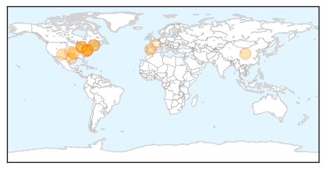
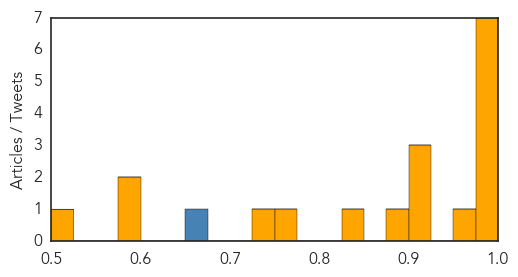
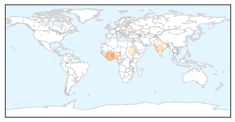
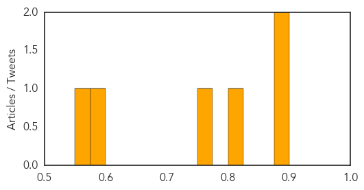

Influenza
30-Day Web Trend
5 alerts, 15 warnings

30-Day Twitter Trend
2 alerts, 0 warnings

Article Locations
Article Confidences
Top Articles:
- 0.999
- Lebanon VA Medical Center requests visitation restrictions as flu season intensifies
- 0.997
- Roll up your sleeve — it’s time to get a flu shot
- 0.993
- 'Like an oil change,' drive-thru flu shots available in Genesee County for the first time
- 0.990
- Scientists 'must not become complacent' when assessing pandemic threat from flu viruses
- 0.986
- proactive steps to stop virus
- 0.986
- proactive steps to stop virus
- 0.981
- CDC speaks on enterovirus link to illegal-alien kids
- 0.957
- Assessing the threat level of Enterovirus in W. Mich.
- 0.925
- Woman infected with bird flu virus delivers healthy child
- 0.905
- Houston doctor explains RSV, a virus that likely affects your kids
- 0.905
- H1N1 flu shots 'safe for pregnant women'
- 0.877
- Students encouraged to get flu vaccinations
- 0.849
- Clinics for free flu shots start Wednesday in Springfield
- 0.766
- US researchers tracking flu through Twitter
- 0.729
- Eastern Michigan University vaccinating students for the flu
- 0.595
- Arkansas delaying community flu shot clinics
- 0.586
- Immunization rates low among kidney transplant candidates
- 0.524
- In 1941 We Thought We Could Eradicate Airborne Diseases
Top Tweets:
- 0.890
- Statistics, elementary Watson Rt: The virus you should really worry about is influenza, not Ebola http://t.co/kvjgk7RKkW
Cholera
30-Day Web Trend
0 alerts, 0 warnings

30-Day Twitter Trend
0 alerts, 0 warnings

Article Locations
Article Confidences
Top Articles:
- 0.897
- Disease detectives
- 0.895
- Health Misinformation Is Deadly As A Prescription Of The Quack Doctor
- 0.823
- Water and sanitation infections rife in Tano North
- 0.763
- Focus efforts on tackling poor sanitation
- 0.596
- FG Urges Nigerians To Imbibe Hand Washing Culture
- 0.562
- South Sudan: the Forgotten Crisis in Jonglei State
Top Tweets:
-
No tweets found for Oct 15, 2014